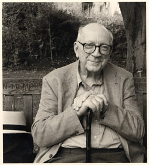

Frederick Morgan (1922-2004) was a native New Yorker and graduate of Princeton University. During World War II he served in the Tank Destroyer Corps of the U.S. Army. A founder, in 1947, of The Hudson Review, he edited it for fifty years until the spring of 1998 and remained affiliated with it in his capacity as Founding Editor until his death. Since 1998, the magazine has been edited by his wife, the art and architecture critic Paula Deitz. His poems appeared in a wide variety of magazines and journals in the United States and abroad. He published ten books of poems, two collections of prose fables, and two books of translations. In 1984 he was made Chevalier de l'Ordre des Arts et des Lettres by the government of France. In 2001 he was named winner of the Aiken Taylor Award for poetry. Morgan spent most of his time in New York City, with summers in Blue Hill, Maine.